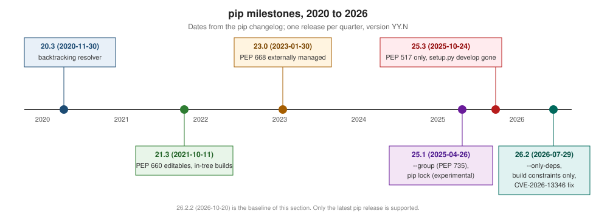

Versions & Release History
|
This content was generated with the assistance of AI and should be verified against the official documentation before being relied on in production. |
This page summarises how pip is released and what changed between the 20.3 resolver release and 26.2.2 (2026-10-20), the release this section is written against. Each change links to the page that explains it. Dates are those of the pip changelog; the upload dates on PyPI differ by one day for 22.0 (2022-01-30 on PyPI), 25.3 (2025-10-25), 26.0 (2026-01-31) and 26.0.1 (2026-02-05).

How pip is released
-
Cadence. pip releases whatever is on its main branch every three months, in January, April, July and October; a month with no changes is skipped. Bug-fix releases (
26.2.1,26.2.2) come in between when needed. -
Version numbers are
YY.N: the two-digit year and the release’s number within that year, starting at 0. 26.0 was January 2026, 26.2 July 2026. They are not semantic versions: a.0is not a "major" release. -
Supported versions. "The latest version of the pip is the only supported version." Upgrade pip in every environment you maintain; see Installing & Upgrading pip.
-
Python support. pip supports the CPython versions that are not end-of-life, and may keep older ones at the maintainers' discretion. pip 26.2.2 runs on CPython 3.10 to 3.15 and the latest PyPy3. Python 3.10 reached end of life on 2026-10-01 but is still listed. Pip 20.3 was the last release for Python 2.
Source: pip: Release cadence, pip: Supported versions, pip: Python support policy, Python developer’s guide: Status of Python versions.
When pip dropped each Python
| Python | Last pip that supports it |
|---|---|
2.7, 3.5 |
20.3.4 (dropped in 21.0) |
3.6 |
21.3.1 (dropped in 22.0) |
3.7 |
24.0 (dropped in 24.1) |
3.8 |
25.0.1 (dropped in 25.1) |
3.9 |
26.0.1 (dropped in 26.1) |
(The last releases are read from each release’s requires_python on PyPI.) An old interpreter keeps working with the last pip
that supported it, because pip’s Requires-Python makes the resolver pick that
version: python3.9 -m pip install --upgrade pip installs pip 26.0.1, not 26.2.2.
The deprecation policy and feature flags
Any change that removes or significantly alters user-visible behaviour described in the documentation is deprecated for at least six months first, with a warning when the feature is used. Two pip team members can fast-track a change to three months if no maintainer objects. Behaviour that is not documented can change without notice. Two flags carry features through this process:
-
--use-feature=<name>lets you try new behaviour before it becomes the default. After it becomes the default the flag may stay, with a warning that it is no longer needed (astruststoreandbuild-constraintdo in 26.2.2). -
--use-deprecated=<name>keeps old behaviour for a while after the default changed (legacy-resolver,legacy-certs). It must warn when the feature will be removed, and once it is removed the flag is an error.
The valid names in 26.2.2 are listed on
Running pip & General Options. The resolver
switch is the textbook case: an alpha behind --unstable-feature=resolver in 20.1, a beta behind --use-feature=2020-resolver in
20.2, the default with --use-deprecated=legacy-resolver as the way out in 20.3, and "no longer supported" from 21.0.
Release by release
| Release (date) | Changes | Explained on |
|---|---|---|
20.3 (2020-11-30) |
New backtracking resolver by default; |
|
21.0 (2021-01-23) |
Python 2 and 3.5 dropped. |
|
21.2 (2021-07-24) |
|
|
21.3 (2021-10-11) |
PEP 660 editable installs; in-tree builds by default; the sysconfig install scheme on Python 3.10+; Git partial clones. |
|
22.0 (2022-01-29) |
Python 3.6 dropped; Rich-based error output. |
|
22.1 (2022-05-11) |
The out-of-tree build option removed; config settings passed to backends. |
|
22.2 (2022-07-21) |
|
|
22.3 (2022-10-15) |
|
|
23.0 (2023-01-30) |
PEP 668 |
|
23.0.1 (2023-02-17) |
|
|
23.1 (2023-04-15) |
|
|
23.2 (2023-07-15) |
Legacy (non-PEP 440) versions deprecated; on Python 3.12+ |
|
23.3 (2023-10-15) |
The |
|
24.1 (2024-06-20) |
Python 3.7 dropped; legacy versions and specifiers removed. |
|
24.2 (2024-07-28) |
System certificates (truststore) by default on Python 3.10+, |
|
24.3 (2024-10-27) |
iOS wheel support. |
|
25.0 (2025-01-26) |
PEP 639 licence fields in |
|
25.1 (2025-04-26) |
Python 3.8 dropped; |
|
25.2 (2025-07-30) |
Python 3.14 support; automatic resume and retry of downloads; |
|
25.3 (2025-10-24) |
|
|
26.0 (2026-01-30) |
|
|
26.1 (2026-04-26) |
Python 3.9 dropped; experimental |
|
26.2 (2026-07-29) |
Python 3.15 support; |
|
26.2.1 (2026-08-04) |
Keyring |
|
26.2.2 (2026-10-20) |
certifi upgraded to 2026.10.19. |
Source: pip changelog.
Upgrade checklist for older projects
If a project was last touched before 2024, check these before moving its CI to pip 26.2.2:
-
setup.py developeditables. Since 25.3pip install -e .needs a backend with PEP 660 support. For setuptools, requiresetuptools>=64in[build-system] requires. -
--global-option,--build-option,--install-option. Removed. Use--config-settingswith the setting your backend documents, or move the configuration intopyproject.toml. -
--no-use-pep517,setup.py installfallbacks. Removed. A project with onlysetup.pystill builds, throughsetuptools.build_meta:__legacy__. -
--use-deprecated=legacy-resolver. Deprecated and unsupported. Fix the conflict it hides; see Dependency Resolution. -
Non-PEP 440 versions of your own or your dependencies' packages (
1.0-final). Ignored since 24.1. -
PIP_CONSTRAINTused to pin build dependencies. Ignored by builds since 26.2; usePIP_BUILD_CONSTRAINT. -
#egg=name[extra]fragments. Only bare names since 26.0; usename[extra] @ url. -
Custom CA bundles. Since 24.2 pip trusts the system store; a
PIP_CERTthat was only a workaround can probably go. -
Installing into a distribution Python. Since 23.0 PEP 668 blocks it; use a venv.
-
The Python version. 3.9 and older need an older pip; plan the interpreter upgrade.